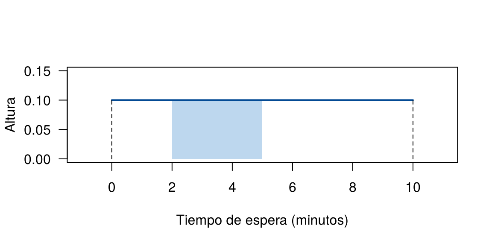

Unidad 2. Probabilidad e inferencia

Esta unidad presenta las bases de la inferencia estadística: la probabilidad, las variables aleatorias, las distribuciones muestrales, la estimación y las pruebas de hipótesis. Cada tema se explica con ejemplos y se acompaña de código en R para calcular y simular.
¿Cómo se organiza el trabajo en 4 semanas?
| Semana | Tema | Páginas |
|---|---|---|
| 1 | Probabilidad | 5 |
| 2 | Variables aleatorias | 5 |
| 3 | Inferencia estadística | 6 |
| 4 | Intervalos de confianza, pruebas de hipótesis y caso integrador | 6 |
Cada página tiene ejemplos con código en R, errores frecuentes y retos con solución. Se recomienda leer las páginas en orden y resolver los retos antes de abrir la solución.
¿Qué se necesita saber antes de empezar?
La unidad no exige cálculo diferencial ni integral: R hace las cuentas difíciles. Sí exige manejar con soltura algunos temas de matemáticas básicas, la estadística descriptiva de la Unidad 1 y un R elemental. Antes de la primera semana, revise esta lista y resuelva el diagnóstico.
¿Qué temas conviene repasar?
| Tema | Dónde se usa en la unidad | Dónde repasar |
|---|---|---|
| Fracciones, decimales y porcentajes | En todas las páginas | Matemáticas de bachillerato |
| Unión, intersección y complemento de conjuntos | Probabilidad (semana 1) | Espacio muestral y eventos |
| Sumatoria (\(\sum\)) y subíndices (\(x_1, \ldots, x_n\)) | Valor esperado, media muestral | Indicadores de centro |
| Factorial y combinaciones | Binomial e hipergeométrica | Grinstead y Snell, capítulo 3 |
| Potencias, raíces y el número \(e\) | Poisson, exponencial, error estándar | Matemáticas de bachillerato |
| Área bajo una curva (idea gráfica) | Variables continuas, normal | Variable aleatoria |
| Tipos de variable | Variables discretas y continuas | Conceptos básicos |
| Media, mediana, varianza y desviación estándar | Error estándar, intervalos, pruebas | Indicadores de dispersión |
| Tablas de doble entrada y proporciones | Probabilidad condicional, chi-cuadrado | Tablas de frecuencia |
| Gráfico de dispersión y correlación | Variables conjuntas, caso integrador | Relaciones y cambios en el tiempo |
Vectores, sum(), mean(),
table() y condiciones lógicas en R |
Todas las simulaciones | Objetos en R y Funciones en R |
¿Qué notación se usa?
Muchas dificultades vienen de la notación y no del concepto. Estos son los símbolos que aparecen con más frecuencia:
| Símbolo | Se lee | Significado en la unidad |
|---|---|---|
| \(\mu\) | mu | Media de la población |
| \(\sigma\), \(\sigma^2\) | sigma, sigma cuadrado | Desviación estándar y varianza de la población |
| \(p\) | p | Proporción de la población |
| \(\bar{x}\), \(s\), \(\hat{p}\) | x barra, s, p gorro | Media, desviación estándar y proporción de la muestra |
| \(\lambda\) | lambda | Tasa promedio (Poisson y exponencial) |
| \(\theta\) | theta | Un parámetro cualquiera |
| \(\alpha\) | alfa | Nivel de significancia de una prueba |
| \(\rho\) | rho | Correlación de la población |
| \(\sum\) | sumatoria | Suma de varios términos |
¿Está listo para empezar?
Resuelva estos seis ejercicios sin abrir la solución. Si falla uno, repase el tema indicado antes de la primera semana.
Ejercicio 1. Porcentajes
En un curso de 40 estudiantes, 12 reprobaron el primer parcial. Exprese esa cantidad como fracción, como decimal y como porcentaje. Si la proporción se mantiene, ¿cuántos reprobarían en un grupo de 150?
Ver solución
\(12/40 = 3/10 = 0.3 = 30\,\%\). En un grupo de 150 se esperan \(0.3 \times 150 = 45\) estudiantes.
Si tuvo dificultad, repase fracciones y porcentajes: aparecen en todas las páginas de la unidad.
Ejercicio 2. Sumatoria
Una variable toma los valores \(x_1 = 0\), \(x_2 = 1\), \(x_3 = 2\) y \(x_4 = 3\) con pesos \(p_1 = 0.1\), \(p_2 = 0.3\), \(p_3 = 0.4\) y \(p_4 = 0.2\). Calcule \(\sum_{i=1}^{4} x_i \, p_i\) a mano y con R.
Ver solución
\(0(0.1) + 1(0.3) + 2(0.4) + 3(0.2) = 0 + 0.3 + 0.8 + 0.6 = 1.7\)
x <- c(0, 1, 2, 3)
p <- c(0.1, 0.3, 0.4, 0.2)
sum(x * p)[1] 1.7Esta suma es el valor esperado de la semana 2. Si tuvo dificultad, repase la notación de sumatoria en Indicadores de centro.
Ejercicio 3. Combinaciones
¿De cuántas formas se puede elegir un comité de 3 estudiantes entre 10? El orden no importa.
Ver solución
\[\binom{10}{3} = \frac{10!}{3!\,7!} = \frac{10 \times 9 \times 8}{3 \times 2 \times 1} = 120\]
choose(10, 3)[1] 120Las combinaciones aparecen en la distribución binomial. Si tuvo dificultad, repase el capítulo 3 de Grinstead y Snell.
Ejercicio 4. Indicadores en R
Los tiempos de espera (minutos) de cinco clientes fueron 12, 15, 9, 20 y 14.
- Calcule la media, la mediana y la desviación estándar con R.
- Antes de ejecutarlo, diga qué devuelve
sum(tiempos > 13)y qué devuelvemean(tiempos > 13).
Ver solución
tiempos <- c(12, 15, 9, 20, 14)
mean(tiempos)[1] 14median(tiempos)[1] 14sd(tiempos)[1] 4.062019sum(tiempos > 13)[1] 3mean(tiempos > 13)[1] 0.6La media y la mediana son 14 minutos, y la desviación estándar es
4.06 minutos. tiempos > 13 es un vector de
TRUE y FALSE: sum() cuenta
cuántos TRUE hay (3) y mean() da la proporción
(0.6). Este truco se usa en todas las simulaciones de la unidad para
estimar probabilidades.
Si tuvo dificultad, repase Indicadores de dispersión y Objetos en R.
Ejercicio 5. Tablas de doble entrada
En una encuesta a 200 personas se registró el sexo y si fuman:
| Mujer | Hombre | Total | |
|---|---|---|---|
| Fuma | 20 | 30 | 50 |
| No fuma | 80 | 70 | 150 |
| Total | 100 | 100 | 200 |
- ¿Qué proporción de las mujeres fuma?
- ¿Qué proporción de los fumadores son mujeres?
Ver solución
\(20/100 = 0.20\): se divide por el total de mujeres (columna).
\(20/50 = 0.40\): se divide por el total de fumadores (fila).
tabla <- matrix(c(20, 80, 30, 70), nrow = 2,
dimnames = list(Habito = c("Fuma", "No fuma"),
Sexo = c("Mujer", "Hombre")))
prop.table(tabla, margin = 2) # proporciones por columna Sexo
Habito Mujer Hombre
Fuma 0.2 0.3
No fuma 0.8 0.7prop.table(tabla, margin = 1) # proporciones por fila Sexo
Habito Mujer Hombre
Fuma 0.4000000 0.6000000
No fuma 0.5333333 0.4666667Las dos preguntas parecen iguales, pero tienen respuestas distintas. Esta diferencia es la base de la probabilidad condicional. Si tuvo dificultad, repase Tablas de frecuencia.
Ejercicio 6. Área bajo una curva
El tiempo de espera de un bus está entre 0 y 10 minutos y todos los valores son igual de posibles. La curva de la figura tiene altura 0.1 en ese intervalo. ¿Cuánto vale el área sombreada, entre 2 y 5 minutos? ¿Cuánto vale el área total?
plot(NULL, xlim = c(-1, 11), ylim = c(0, 0.15), xlab = "Tiempo de espera (minutos)",
ylab = "Altura", las = 1)
polygon(c(2, 5, 5, 2), c(0, 0, 0.1, 0.1), col = "#BDD7EE", border = NA)
segments(0, 0.1, 10, 0.1, lwd = 2, col = "#034a94")
segments(c(0, 10), 0, c(0, 10), 0.1, lty = 2)
Curva de altura constante entre 0 y 10 minutos
Ver solución
El área sombreada es un rectángulo: base \(5 - 2 = 3\) por altura \(0.1\), que da \(0.3\). El área total es \(10 \times 0.1 = 1\).
En la semana 2 esta área será la probabilidad de esperar entre 2 y 5 minutos, y el área total siempre vale 1. Si tuvo dificultad, no se preocupe: la idea se explica en Variable aleatoria, pero conviene recordar cómo se calcula el área de un rectángulo.
Contenido de la unidad
Probabilidad
Variables aleatorias
- Variable aleatoria
- Valor esperado y varianza
- Variables conjuntas
- Modelos discretos
- Modelos continuos
Inferencia estadística
- Conceptos básicos
- Distribución muestral
- Teorema del límite central
- Propiedades de los estimadores
- Métodos de estimación
- Bootstrap
Intervalos de confianza
Pruebas de hipótesis
- Conceptos de las pruebas de hipótesis
- Pruebas para medias y proporciones
- Pruebas no paramétricas y para tablas
-
Actividad evaluativa